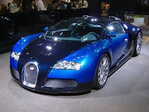

ავტომობილები ეტორე ბუგატი იყო მაღალი ხარისხის ავტომობილების ფრანგული მწარმოებელი . კომპანია დააარსა 1909 წელს, მაშინდელ გერმანულ ქალაქ მოლჰაიმში , ელზასის შტატში , იტალიელი წარმოშობის სამრეწველო დიზაინერის, ეტორე ბუგატის მიერ . ავტომობილები ცნობილი იყო დიზაინის სილამაზითა და მრავალი რბოლაში გამარჯვებით. ცნობილი ბუგატის ავტომობილებია Type 35 Grand Prix მანქანები, Type 41 "Royale" , Type 57 "Atlantic" და Type 55 სპორტული მანქანა
